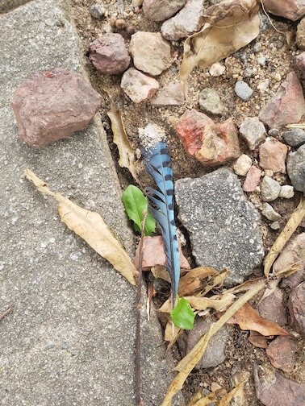

Forces of Nature's Transformation
Photography, ongoing
Forces of Nature's Transformation is an ongoing photo project documenting the intersection of nature and urban life. This project takes its name from the 2024 album of the same name by Boston crust punk band Lifeless Dark.
Forces of transformation
Will favor the forsaken
The ghosts of rage are summoned
In the name of those forgotten
- Lifeless Dark, The Forgotten, 2024


